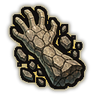
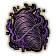

Technique trees › Clans and bloodlines
Onigami clan
7 techniques in the Clan tab.
Needs the Onigami gene.
Tasukeru: Seeing Life CS
Chakra 15 to 40. Open the all-seeing eye for half an hour: 360-degree sight that reads every movement.
Tasukeru: Seeing Life CS
Chakra 15 to 40. Open the all-seeing eye for half an hour: 360-degree sight that reads every movement.
Open the all-seeing eye for half an hour: 360-degree sight that reads every movement.
| Rank | Chakra | Cooldown | Class level |
|---|---|---|---|
| C | 15 | 1.2 hours | 4 |
| S | 40 | 1.2 hours | 17 |

Petrify C
Chakra 20. Turn an enemy's limbs stiff as stone for a minute.
Petrify C
Chakra 20. Turn an enemy's limbs stiff as stone for a minute.
Turn an enemy's limbs stiff as stone for a minute.
| Rank | Chakra | Cooldown | Class level |
|---|---|---|---|
| C | 20 | 25 s | 5 |
Benshutsu: Gift of Life BAS
Chakra 35 to 100. Trade the user's life force for an ally's. At S rank, call back someone who died within the last minute.
Benshutsu: Gift of Life BAS
Chakra 35 to 100. Trade the user's life force for an ally's. At S rank, call back someone who died within the last minute.
Trade the user's life force for an ally's. At S rank, call back someone who died within the last minute.
| Rank | Chakra | Cooldown | Class level |
|---|---|---|---|
| B | 35 | 1.2 hours | 9 |
| A | 50 | 1.2 hours | 13 |
| S | 100 | 1 day | 18 |
Chrysalis B
Chakra 30. A cocoon of chakra where the user recovers: strong healing for a minute.
Chrysalis B
Chakra 30. A cocoon of chakra where the user recovers: strong healing for a minute.
A cocoon of chakra where the user recovers: strong healing for a minute.
| Rank | Chakra | Cooldown | Class level |
|---|---|---|---|
| B | 30 | 4 hours | 10 |

Degeneration B
Chakra 30. Wrap an enemy in a cocoon that drains their energy for half a minute.
Degeneration B
Chakra 30. Wrap an enemy in a cocoon that drains their energy for half a minute.
Wrap an enemy in a cocoon that drains their energy for half a minute.
| Rank | Chakra | Cooldown | Class level |
|---|---|---|---|
| B | 30 | 1 hour | 10 |
Shinkaku: Divinity A
Chakra 45. Coat the user in divine chakra for half an hour, cutting the damage of every attack.
Shinkaku: Divinity A
Chakra 45. Coat the user in divine chakra for half an hour, cutting the damage of every attack.
Coat the user in divine chakra for half an hour, cutting the damage of every attack.
| Rank | Chakra | Cooldown | Class level |
|---|---|---|---|
| A | 45 | 2 hours | 13 |
Miracle Cocoon S
Chakra 70. S-rank: a cocoon around the user that turns back almost anything.
Miracle Cocoon S
Chakra 70. S-rank: a cocoon around the user that turns back almost anything.
S-rank: a cocoon around the user that turns back almost anything.
| Rank | Chakra | Cooldown | Class level |
|---|---|---|---|
| S | 70 | 3.2 hours | 17 |
Chakra is the technique's base cost, the number in its def. In play it is multiplied by the pawn's chakra energy usage multiplier, which traits (chakra artificer 90%, volatile conduit 110%), World of Naruto genes and jutsu enhancements change, so the technique window can show a slightly different number for each ninja. Cooldowns are in-game time, as the technique window shows them, and the pawn's cooldown stat shortens or lengthens them. World of Naruto gives every ninja a base of 100 maximum chakra; genes and traits change it.